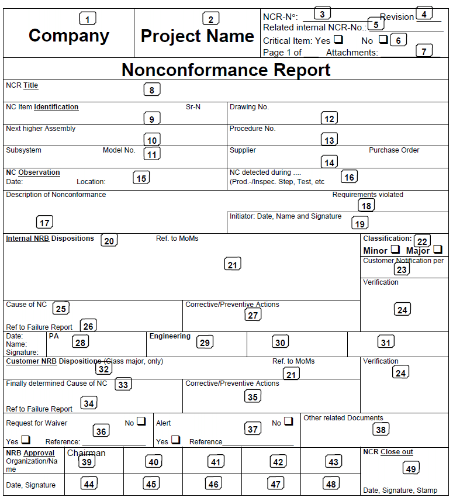
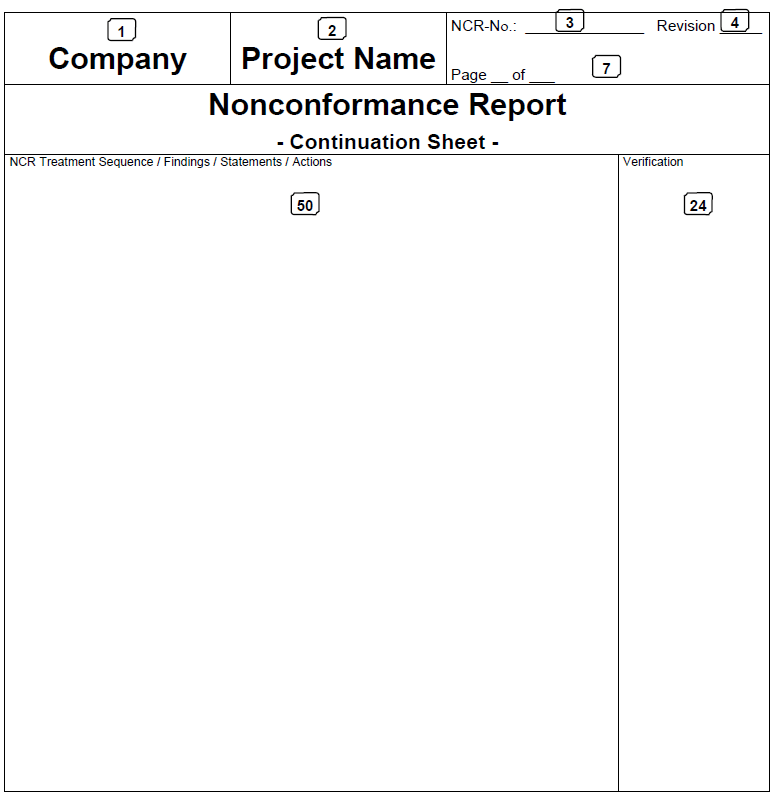

DRD-03.01 - Non-Conformance Report (NCR) |
| Reference: | ECSS-Q-ST-20C | Space product assurance - Quality assurance |
| ECSS-Q-ST-10-09C | Space Product Assurance - Nonconformance control system | |
| ECSS-M-ST-40C | Space project management - Configuration and information management |
| Purpose: | After verifying that a non-conformance (NC) exists, it shall be reported on a Non-Conformance Report
(NCR) and submitted to the internal Non-Conformance Review Board (NRB). When NRB disposition result in "use as-is" or "repair" by specific procedures, any difference between requirements and the actual status of the item shall be subjected to a Request for Waiver (RFW). A NCR shall be closed-out only after all related actions have been performed and their results successfully verified and the related RFW is approved. Also the NCTS may be used to process NCRs. In this case the NCTS process description shall be applicable. |
| Content: | The description of the NC shall be clear, unambiguous and sufficiently detailed that it can be
understood by personnel not involved in its detection. All the information defined as mandatory in the generic NCR Form below shall be provided, including a proposed disposition. For the preparation of RFW see DRD-3.04. |
| Format: | Generic NCR Form (Description and instructions for completing the form see below) |
|  |
|  |
| Box | Feld | Description | Mandatory entry |
|---|---|---|---|
| 1 | Company | Identification of the supplier of the nonconforming item | Yes |
| 2 | Project name | Project under which the item is procured | Yes |
| 3 | NCR-no. | Unique identification and registration number | Yes |
| 4 | Revision | Alpha or numerical identification of updated issues | Yes |
| 5 | Related internal NCR | Reference to internal report which might have been issued previously | No |
| 6 | Critical item | "Yes" or "No" as identified in the project CIL | Yes |
| 7 | Page Attachments |
Individual page number and total number of pages of the report Attached pages (only first page of each item) |
Yes |
| 8 | NCR title | Short description (it should be the same as used in the nonconformance status list) | Yes |
| 9 | NC item | Identification of the nonconforming item by name and number according to the CIDL and its serial number (if any) | Yes |
| 10 | Next higher assembly | Identification of the assembly group of which the nonconforming product forms part | No |
| 11 | Subsystem Model |
as per 10 as per 10 |
No No |
| 12 | Drawing no./Part no. | Document that defines the affected product | Yes, if applicable |
| 13 | Procedure no. | Procedure in execution when the nonconformance occurs | Yes, if applicable |
| 14 | supplier Purchase order |
Name of the supplier of the nonconforming item Number of purchase order if the nonconformance is observed on a supplied product |
Yes, if applicable |
| 15 | NC observation | Date and location of the nonconformance observation | Yes |
| 16 | NC detected during ... | Activity being performed when the nonconformance was detected Name and organization group of the NC observer |
Yes, where relevant |
| 17 | Description | Description of the nonconformance, location on the product, means of detection, condition for observation, to be supported by sketches and attachments as appropriate, environmental conditions pertaining to the product at that time | Yes |
| 18 | Requirements violated | Identification of the detailed requirement to which the product does not conform | No |
| 19 | Initiator | Name, date and signature of the person raising the nonconformance | Yes |
| 20 | Internal NRB | Dispositions as per clause 5.2.2.4 of ECSS-Q-ST-10-09 and actions agreed by the NRB | Yes |
| 21 | Ref.to MoMos | Identification of minutes of meeting drafted during the NRB meeting | Yes, if any |
| 22 | Classification | "Minor" or "Major" as per internal NRB decision | Yes |
| 23 | Customer notification | Date and reference to written notification | No |
| 24 | Verification | Individual close-out statement by PA personnel for all actions determined by the NRB | Yes |
| 25 | Cause of NC | Basic fact or circumstance which causes the nonconformance | Yes |
| 26 | Ref. to failure report | Document identification number of the failure analysis report | Yes, if existing |
| 27 | Corrective or preventive actions | Corrective or preventive actions agreed by internal NRB for minor NCRs | Yes |
| 28 | PA | Date, name and signature of PA representative in the internal NRB | Yes |
| 29 | Engineering | Date, name and signature of the engineering representative in the internal NRB | Yes |
| 30 31 |
blank | Date, names and signatures of additional NRB members of the internal NRB | No |
| 32 | Customer NRB dispositions | Dispositions as per clause 5.2.3.4 of ECSS-Q-ST-10-09 and actions agreed by the customer NRB | Yes, if class major |
| 33 | Finally determined cause of NC | Basic fact or circumstances which causes the nonconformance as confirmed by customer NRB | Yes, if class major |
| 34 | Ref to Failure Report | Document identification number of the failure analysis report on customer NRB level | Yes, if existing |
| 35 | Corrective or preventive actions | Corrective actions agreed by customer NRB for major NCRs | Yes |
| 36 | Request for waiver | "Yes" or "No" based on customer NRB disposition and the identification number of the RFW in case of "Yes" | Yes, if applicable |
| 37 | Alert | "Yes" or "No" as per customer NRB decision and the identification number of the Alert in case of"Yes" | No |
| 38 | Other documents | Identification of other related documents according to NRB decision |
Yes, if applicable |
| 39 | Chairman | Name of company and person chairing the customer NRB | Yes |
| 40 to 43 |
blank | Names of the members of the customer NRB and respective companies | Yes |
| 44 | blank | Date and signature of the customer NRB chairman | Yes |
| 45 to 48 |
blank | Date and signatures of the customer NRB members | Yes |
| 50 | Additional info. /continuation sheet | Any additional information and actions with clear link to the NCR | Yes, if needed |